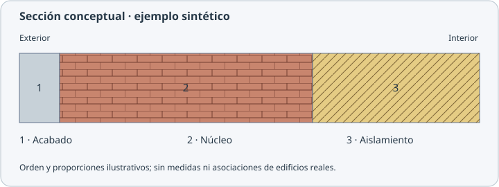

Metodología científica
La referencia compartida por los participantes de DECUB coordina resultados, no prescribe una implementación literal. Se desarrollarán métodos propios, trazables e intercambiables, con exportaciones compatibles y análisis adicionales.
Cuantificación elemental
Para una capa homogénea: V = A × e y m = V × ρ, con superficie en m², espesor en m, volumen en m³ y densidad en kg/m³. Ejemplo sintético: 10 m² × 0,10 m = 1 m³; con una densidad ficticia de 1.500 kg/m³ se obtienen 1.500 kg. Este ejemplo no es un valor de referencia material.

Las capas compuestas, huecos y marcos requieren métodos diferenciados. El porcentaje superficial de marco no basta para obtener su volumen. Las superficies netas y brutas no pueden mezclarse ni descontar huecos dos veces. La información no modelada debe declararse como fuera de alcance o pendiente, según corresponda.
Intensidades
MI = masa / denominador. Puede expresarse en kg/m² de superficie de referencia o kg/m³ de volumen de referencia. Los resultados coordinados podrán desagregarse por material, categoría material, componente y tipología. Se conservará la definición de denominador, alcance y perfil; las superficies de elementos no equivalen a superficie de suelo.
Trazabilidad y cobertura
flowchart LR
A[Medición] --> B[Composición]
B --> C[Asignación material]
C --> D[Método + propiedad]
D --> E[Cantidad]
E --> F[Indicador + denominador]| Estado | Interpretación |
|---|---|
| Calculado | Entradas suficientes para el método |
| Estimado | Hipótesis identificada |
| Parcial | Solo parte de la cantidad conocida |
| Pendiente | Entradas insuficientes |
| Excluido | Decisión explícita de alcance |
| Ausencia confirmada | Cero físicamente justificado |
La cobertura se definirá con denominadores explícitos; no se confundirá la suma conocida con el inventario completo. Densidades, métodos y correspondencias conservarán procedencia y alternativas. No hay todavía métodos científicos implementados ni valores reales incluidos.
Perfiles y correspondencias
La estructura metodológica permite registrar métodos versionados, perfiles, hipótesis y conjuntos de correspondencias independientes de las composiciones físicas. La selección de fuentes alternativas y parámetros se describe en el perfil, pero los valores físicos permanecen en el catálogo. Un perfil no es todavía ejecutable: faltan el registro Python de métodos, la resolución de fuentes y la validación de los parámetros.
Ejemplo sintético: una parte de 1 m³ puede contener 0,7 m³ de material A y 0,2 m³ de material B, dejando 0,1 m³ de huecos. La fracción volumétrica no es una fracción másica. La cobertura debe declarar los huecos y las cantidades desconocidas sin convertirlos en materiales ficticios.
Registro de cantidades e indicadores
El esquema de resultados ya permite registrar ejecuciones y cantidades por contribución, agregados por modelo e indicadores de razón con su medición de referencia. El motor Python todavía no está implementado. La cobertura de masa y volumen se registrará por separado y su base deberá justificarse. Las partes sin material identificado podrán generar incidencias sin crear materiales ficticios.
Los resultados pueden utilizar mediciones agregadas o estimaciones por componente cuando no existen elementos individuales. La selección de ámbitos no solapados, la compatibilidad de unidades y la documentación de las entradas efectivas deben formar parte del cálculo reproducible.
El manifiesto de ejecución fija las entradas efectivas antes del cálculo. El futuro motor debe seleccionar métodos, parámetros, hipótesis, correspondencias, mediciones, densidades y clasificaciones realmente utilizados, además de sus dependencias, y consumir dicha selección. El sellado no decide qué densidad o medición es científicamente apropiada ni resuelve solapamientos.
Reference catalog import
The reference workbook is an independent source, not an executable methodology. The adapter reads the material lists, component codes and typology grid from the hypotheses sheet, waste hierarchy and density summary from the classification sheet, and bibliographic entries from the documentation sheet. It does not import building inventories, derived intensity tables or calculation hypotheses.
flowchart LR
A[Workbook] --> B[Normalize and validate]
B --> C[Compare existing catalog]
C --> D[Read-only preview]
C --> E[Atomic import]
E --> F[Source records]
E --> G[Versioned catalog]Run from the repository root with a configured database connection:
decub import catalog --file "data/reference/catalog.xlsx" --dry-run
decub import catalog --file "data/reference/catalog.xlsx" --apply
A preview reads the target database but makes no writes. Review warnings, missing materials and identity conflicts before applying. The apply operation uses one transaction and an adapter-specific advisory lock. Independent writers should not modify the same imported namespace concurrently.
Reimport and identity
An identical binary file with identical adapter configuration and a completed import is a no-op. Material identities are namespaced hashes of normalized names; there are no stable material codes in the supported workbook layout. Waste codes are not material identifiers. A new filename does not change identity. A changed file may create provenance records even when all normalized data is unchanged. Classification versions include the normalized node hierarchy and memberships; changes produce a new version, preserving older assignments. Changed density values or citation notes create new property records linked to their predecessor. Properties from other sources are not overwritten. Names already stored are retained; confirmed alternate names are aliases. Missing materials are reported, not removed or retired. New and missing identities together block apply unless explicitly resolved or confirmed as distinct additions/removals.
For a confirmed rename, use a local JSON object (new label to established label):
{"Synthetic renamed material": "Synthetic original material"}
Pass --aliases data/reference/aliases.json in both preview and apply. Preserve
this mapping for subsequent imports. Use --allow-identity-changes only after
reviewing intentional simultaneous additions and removals. The adapter does not
perform fuzzy matching or infer missing hazardous waste markers. Bibliographic
entries and density citation notes are source claims, not independently verified
references. Density values are taken from the cached numeric cells in the
summary (kg/m3); nonnumeric densities are rejected. Missing densities are not zero.
The initial adapter supports the observed fixed worksheet layout (including the
category list and typology grid); changed layouts require review and adaptation.
The preview is advisory, and apply recalculates the comparison in its transaction.